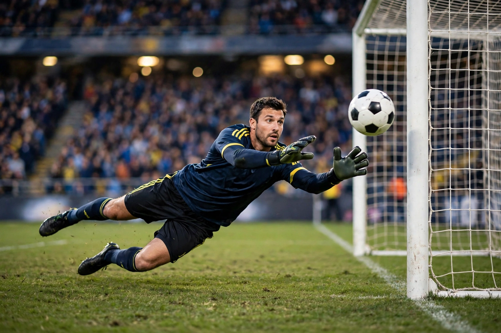
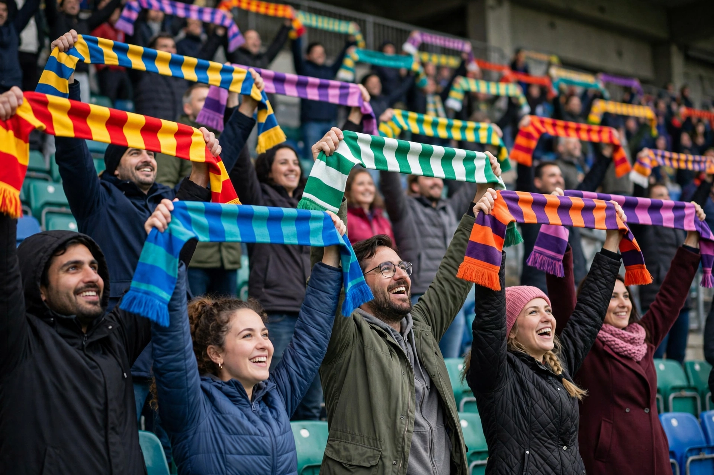

Which Channel Shows Which League
| League | Official channel or service | Usual kickoff |
|---|---|---|
| Premier League | Peacock | Saturday 7.30 AM, 10 AM, 12.30 PM Eastern |
| Champions League | Paramount Plus | Tuesday and Wednesday 12.45 PM and 3 PM Eastern |
| La Liga and Bundesliga | ESPN Plus | Weekends, afternoons Eastern |
| MLS | Apple TV | Mostly Saturday evenings Eastern |
There is no single soccer channel in the United States, and that trips up new fans more than anything else. A fan who watches the Premier League on Saturday and then looks for the Champions League in the same place on Tuesday will not find it. The league decides the channel. Once you know that, the rest is simple.
Premier League: Saturday Mornings Belong to Soccer
The Premier League is the easiest league to plan around, because its rhythm barely changes. Saturday is the big day. The first game usually kicks off at 7.30 AM Eastern, the next set starts at 10 AM, and the late game starts at 12.30 PM. If you set one alarm for 7.30, you can catch the early game with coffee, the middle games over brunch, and the late game in the early afternoon.
Sunday has games too, usually at 9 AM and 11.30 AM Eastern, but Saturday is where the league lives. Most fans pick one game at 10 AM as their main event and check the scores of the others on their phone.

One thing worth knowing: every Premier League game in the United States is on Peacock. You do not need to hunt across channels. Open Peacock on Saturday morning, and the day's games are listed in kickoff order. That single fact makes the Premier League the least confusing league an American fan can follow.
Champions League: Tuesday and Wednesday Afternoons
The Champions League runs on a different clock from the Premier League, and that catches people out. Games are on Tuesday and Wednesday, not the weekend, and they start in the afternoon: 12.45 PM Eastern for the early games and 3 PM Eastern for the late ones. If you work a normal day job, the early games are a lunch-break watch and the late games start just as the workday ends.
The channel is Paramount Plus for every game. That is the whole answer. No game moves to another service midweek, so once you have Paramount Plus you are covered for the full competition, from the group stage to the final. What changes is which teams play on which day, so check the schedule on the day itself, every week, instead of trusting last week's day.
MLS: Saturday Nights on Apple TV
MLS is the simplest league of the three to watch, because nearly every game is in one place: Apple TV. Most games are on Saturday evenings, usually at 7.30 PM Eastern, which makes MLS the nightcap after a day of Premier League mornings. The league also plays midweek games now and then, usually on Wednesday evenings, but Saturday is the pattern to learn first.
La Liga and the Bundesliga: The ESPN Plus Afternoons
Spanish and German soccer both live on ESPN Plus in the United States. La Liga games usually start in the early afternoon Eastern on Saturdays and Sundays, and the Bundesliga follows a similar pattern, with most games on Saturday afternoons and one on Sunday. These two leagues suit fans who want more soccer after the Premier League day ends: Premier League in the morning, La Liga and the Bundesliga in the afternoon, MLS at night. That is a full day of soccer across three services.
How to Plan a Soccer Weekend
The best way to plan is to do it once, on Friday, and then stop checking.
- Friday evening: open the schedule and write down your team's game, plus one more game you want to watch. Note the time in your own time zone, not Eastern Time.
- Saturday morning: set one alarm for 7.30 AM Eastern if you want the early Premier League game. If not, start at 10 AM with the main set of games.
- Saturday afternoon: switch to La Liga or the Bundesliga after the Premier League late game ends at about 2.30 PM Eastern.
- Saturday evening: finish with MLS at 7.30 PM Eastern on Apple TV.
- Sunday: repeat the morning pattern with the remaining Premier League games, then check the Champions League draw for Tuesday.
Three Mistakes Soccer Fans Make
First, looking for every league in one place. The Premier League is on Peacock, the Champions League is on Paramount Plus, and MLS is on Apple TV. No one service carries all three. Accept that, and the schedule stops feeling like a puzzle.
Second, trusting the time from memory. Kickoff times change with the round and with television. A Premier League game that started at 10 AM last month might start at 12.30 PM this month. Champions League times shift between 12.45 PM and 3 PM depending on the matchday. Check the day itself.

Third, trying to watch everything. On a big Saturday there can be ten Premier League games, plus La Liga, the Bundesliga and MLS. Nobody watches them all. Pick one game to watch properly and check the other scores on your phone.
Frequently Asked Questions
What time does the Premier League start on Saturday?
The first game usually starts at 7.30 AM Eastern, with more games at 10 AM and a late game at 12.30 PM Eastern. All of them are on Peacock in the United States.
Where can I watch the Champions League?
On Paramount Plus. Games are on Tuesday and Wednesday, starting at 12.45 PM and 3 PM Eastern.
Do I need an account to check the schedule?
No. Checking a schedule is free and needs no account. Watching a live game through an official broadcaster may need its own subscription.
Is Sportsurge affiliated with any league?
No. Sportsurge is an independent schedule and guide hub, not affiliated with the Premier League, UEFA, MLS, or any broadcaster.